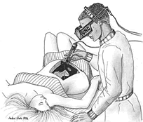

Medicina(){
i++
A Realidade aumentada também pode salvar vidas!
A Realidade aumentada não vem para nos proporcionar apenas diversão. Além dos videogames, anúncios de marketing mais divertidos e maneiras mais interessantes de se aprender, esta tecnologia promete salvar e melhorar a vida de muitas pessoas. Veja a seguir algumas das aplicações mais interessantes que encontramos da Realidade Aumentada na Medicina.
Já imaginou tirar um raio-x de suas veias? Melhor: um raio-x em tempo real de suas veias! Você levanta um braço e lá vai a projeção de suas veias junto. Seria uma ótima ajuda para os médicos, afinal, se eles vêem onde está a veia no exato momento de um procedimento, fica muito mais fácil saber onde exatamente ele deve trabalhar. Pois isso já é possível. O cirurgião vascular Kasuo Miyake foi o primeiro no Brasil a utilizar o sistema VeinViewer. Segundo Miyake “Isso permite um tratamento mais eficaz para problemas vasculares”.
O VeinViewer é um dispositivo criado pela Christie Medical Holdings, o sistema utiliza sensores que, através da temperatura do corpo, detecta a presença de veias no corpo humano. As informações coletadas pelos sensores são passadas a um processador que calcula a imagem referente às veias e as projeta sobre o corpo do paciente. Veja abaixo um vídeo sobre o funcionamento do VeinViewer.
Na USP (Universidade de São Paulo), a pesquisadora Liliane dos Santos Machado criou um simulador de coleta de medula óssea. O sistema criado pela brasileira foi o primeiro no mundo nessa área, e possibilita aos estudantes uma maneira segura de treinar a coleta de medula em crianças. O dispositivo conta com uma representação da bacia de uma criança em um monitor, a qual pode ser vista em três dimensões através da utilização de um óculos especial. Além da visualização, o sistema conta com um robô conectado ao computador que faz o papél de um dispositivo háptico, permitindo o usuário sentir e tocar os objetos projetados.

Diagrama com a seqüência de execução dos módulos do simulador de coleta de medula óssea e as imagens das telas correspondentes.

Outra aplicação interessante da Realidade Aumentada em Medicina está relacionada à ultrasonografia. Ao invés de olhar para um monitor enquanto examina a paciente, o médico pode utilizar um óculos que projeta a imagem do interior do paciente sobre seu corpo. No caso de uma mulher grávida, o feto é projetado sobre sua barriga e a projeção é atualizada de acordo com o movimento do usuário, causando a impressão de que se pode ver o que acontece dentro da barriga da mãe. O projeto permite também a visualização do interior do paciente para guiar procedimentos como a biopsia de seios. O projeto é atualmente desenvolvido pelo MIDAG (Grupo de Criação e Análise de Imagens Médicas, numa tradução livre para o português) da Universidade da Carolina do Norte.
A medicina é sem dúvidas uma das áreas que mais tem a ganhar com a Realidade Aumentada, devido a grande utilização de imagens geradas por computador neste campo, é fácil pensar inúmeras aplicações que podem tornar mais precisos e mais ágeis os procedimentos médicos.
Podemos pensar, por exemplo, num sistema que escaneie e digitalize o cérebro de uma pessoa, projete-o na sala de um cirurgião do outro lado mundo, o qual realiza, alí mesmo, a cirurgia sobre o cérebro projetado, tendo seus movimentos perfeitamente reproduzidos por um robô, na sala real de cirurgia. Assustador? Pode até ser, mas esse é o provável futuro da medicina, cada vez mais integrada com a computação, que traz aos procedimentos médicos maior precisão e facilidade.
Referências:
}